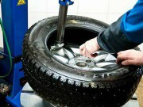

 Возникли проблемы с колесами? Заменить «резину» в нашем автосервисе можно без задержек даже в разгар сезона! Опытные мастера максимально быстро решат любые проблемы с шинами. Современное оборудование и высокое качество - залог эффективности работы автосервиса. У нас наиболее распространенные виды шин самых лучших производителей.
Почему своевременная балансировка имеет такое большое значение? Обеспечивает она не только комфорт при движении. Уменьшение износа деталей и повышение безопасности напрямую связаны с качеством шин. Несоответствие стандартам и размерам может повлечь за собой не самые приятные последствия. Значение шин в общем «организме» достаточно велико.
Весь процесс работы проходит в присутствии клиента. Некоторые спорные ситуации и вопросы требуют решения самого владельца авто. После загона автомобиля на подъемник с него снимают колеса. Затем следует процесс их промывки в специальной мойке и передачи на станок демонтажа устаревших шин. Итак, диски подготовлены, можно приступать к монтажу новых шин! Завершается весь процесс балансировкой колес, их установкой на автомобиль и затяжкой болтов.
Все этапы работы мы выполняем на высококачественном оборудовании. Качественная сборка-разборка, балансировка колеса и шиномонтаж осуществляются на специальных шиномонтажных и балансировочных станках. Для демонтажа и монтажа используются специальные станки с функцией подрыва. Для предотвращения повреждения литых дисков используются пластмассовые насадки.
Шиномонтаж в нашем автосервисе производится с гарантией надежности и качества. Делать его мы рекомендуем каждые 5000 км. Уменьшить износ деталей подвески и резины, избежать дисбаланса колес - легко, достаточно обратиться к нам!